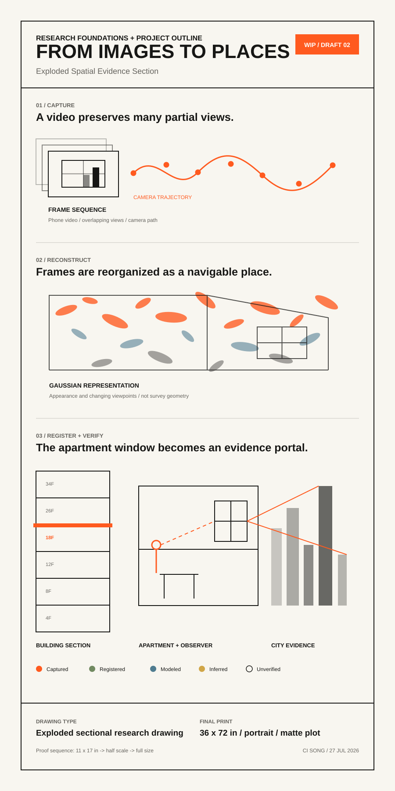

Photo
One fixed view
Research Foundations + Project Outline · Second Draft
Gaussian Splatting Research
What if a video could become a place?
Gaussian Splatting can turn ordinary footage into a spatial record that people can revisit, share, compare, and question.
01 / Core proposition
02 / A shift in media
One fixed view
One chosen path
Look from one point
Rebuilt geometry
Move through appearance
Visual realism is not measurement accuracy. A splat records appearance and changing viewpoints; it does not automatically replace surveying, BIM, or verified geometry.
03 / New spatial capacity
Preserve a room with its light, materials, and lived arrangement.
Visit a real place remotely instead of following a fixed camera.
Use a phone as a first step toward spatial documentation.
Bring captured places into archives, design, film, education, and XR.
Examine viewpoints, floors, orientations, and changes over time.
04 / Core concept prototype
A captured interior becomes the starting point for comparing floor, viewpoint, window direction, obstruction, and evidence source.
05 / Drawing confirmation

WIP / SECOND DRAFTGoogle Drive · Columbia view access enabled. The image preview opens the public PDF.
06 / Material gesture + setup confirmation
Phone video
Browser-based splat
Physical window portal
Floor, view, evidence
A simple freestanding window frame turns the screen or projection into a portal between a captured apartment and its urban view.
Laptop + web viewer, monitor or short-throw projection, one physical frame, one input control, and the 36 × 72 in drawing beside it.
The current site confirms the interaction and installation logic. Real capture, registration, and projector testing remain the next material tests.
07 / Evidence + research foundation